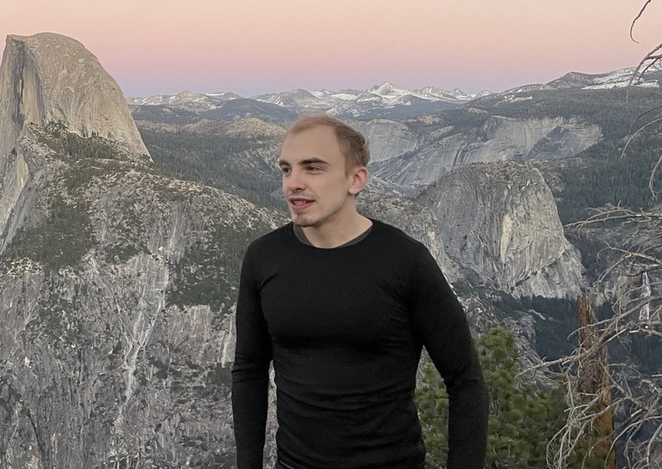

About me
I am the cofounder and CEO of LLMs For All, where I work on language models and software for local AI. I am interested in making capable models practical on accessible hardware and turning research into tools people can use.
Background
I began as a pre-med student and neuroimaging researcher in the US. Near the end of my undergraduate degree, I became interested in deep learning and moved to Edinburgh in 2014.
At the University of Edinburgh, I completed a master's focused on Hessian-free optimization in LSTMs, followed by a PhD in Informatics supervised by Steve Renals and Iain Murray. I introduced multiplicative LSTM, used in OpenAI’s sentiment-neuron work before GPT-1, and developed dynamic-evaluation methods that achieved state-of-the-art language-modeling results.
I joined Salesforce Research in 2019 and went on to work as a Senior Research Scientist. I introduced GeDi for contrastive control of language-model generation and co-developed the modeling behind ProGen’s experimental demonstration of functional protein generation, published in Nature Biotechnology. I also worked on brand-voice language modeling.
I also created the AutoGRAMS AI agent framework and co-founded Psyfy. At LLMs For All, I now bring that experience in language models and applications to local AI.
Outside work

I enjoy chess, skydiving, and spending time outdoors. I earned the US national master title in chess and my skydiving license in 2018.